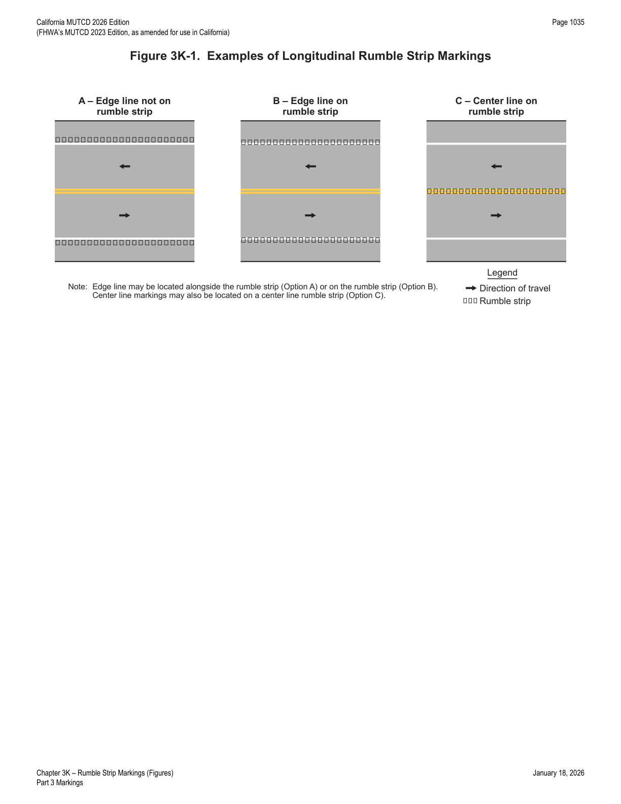

Part 3 · Markings · Chapter 3K
Rumble Strip Markings
Provisions for the use of pavement markings in combination with longitudinal and transverse rumble strips — this Manual governs only the marking treatment, not the design or placement of the rumble strips themselves.
3K.01Longitudinal Rumble Strip Markings
Support — Background/Explanatory
- 01Longitudinal rumble strips consist of a series of rough-textured or slightly raised or depressed road surfaces intended to alert inattentive drivers through vibration and sound that their vehicle has left the travel lane. Shoulder rumble strips are typically installed along the shoulder near the travel lane. On divided highways, rumble strips are sometimes installed on the median side (left-hand side) shoulder as well as on the outside (right-hand side) shoulder. On two-way roadways, rumble strips are sometimes installed along the center line.
- 02This Manual contains no provisions regarding the design and placement of longitudinal rumble strips. The provisions in this Manual address the use of markings in combination with a longitudinal rumble strip. Figure 3K-1 illustrates markings used with or near longitudinal rumble strips.
- 03Section 6M.06 contains information related to longitudinal rumble strips.
Option — Permissive
- 04An edge line or center line may be located over a longitudinal rumble strip to create a rumble stripe.
Standard — Mandatory Requirement
- 05The color of an edge line or center line associated with a longitudinal rumble stripe shall be in accordance with Section 3A.03.
- 06An edge line shall not be used in addition to a rumble stripe that is located along a shoulder.

In practice: an edge line may sit beside the rumble strip (Drawing A) or directly on it to form a rumble stripe (Drawing B), and a center line rumble strip works the same way (Drawing C) — but once the rumble strip is along a shoulder, a separate edge line in addition to the rumble stripe is not permitted.
3K.02Transverse Rumble Strip Markings
Support — Background/Explanatory
- 01Transverse rumble strips consist of intermittent narrow, transverse areas of rough-textured or slightly raised or depressed road surface that extend across the travel lanes to alert drivers to unusual vehicular traffic conditions. Through noise and vibration, they attract the attention of road users to features such as unexpected changes in alignment and conditions requiring a reduction in speed or a stop.
- 02This Manual contains no provisions regarding the design and placement of transverse rumble strips that approximate the color of the pavement. The provisions in this Manual address the use of markings in combination with a transverse rumble strip.
- 03Section 6M.06 contains information related to transverse rumble strips.
Standard — Mandatory Requirement
- 04Except as otherwise provided in Section 6M.06 for TTC zones, if the color of a transverse rumble strip used within a travel lane is not the color of the pavement, the color of the transverse rumble strip shall be either black or white.
Guidance — Recommended Practice
- 05White transverse rumble strip markings used in a travel lane should not be placed in locations where they could be confused with other transverse markings such as stop lines or crosswalks.
★ Key Takeaways — Chapter 3K
- This Manual only governs pavement markings used with rumble strips — the physical design and placement of the rumble strip itself is addressed in Section 6M.06, not this Chapter.
- An edge line or center line may be placed directly over a longitudinal rumble strip to form a "rumble stripe," colored per Section 3A.03, but an edge line shall not be added alongside a shoulder rumble stripe that already exists there.
- Figure 3K-1 shows three longitudinal configurations: edge line beside the rumble strip, edge line on the rumble strip, and center line on the rumble strip.
- For transverse rumble strips within a travel lane, if the strip color differs from the pavement, it shall be black or white (except as TTC zone provisions in Section 6M.06 otherwise allow); white transverse rumble strip markings should not be placed where they could be mistaken for stop lines or crosswalks.